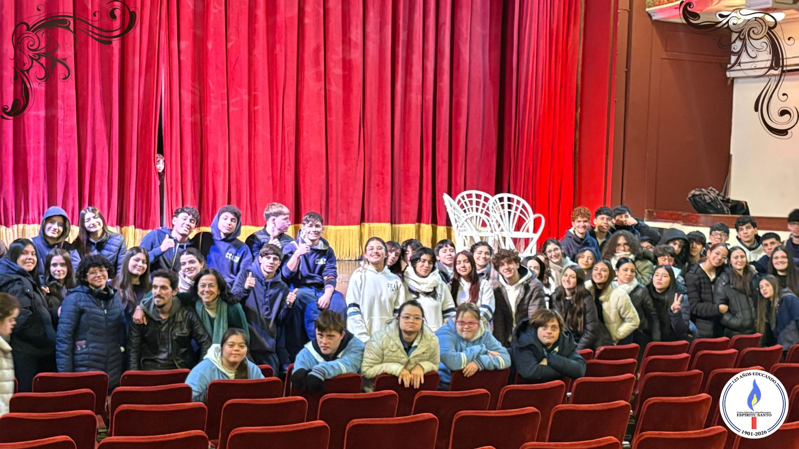
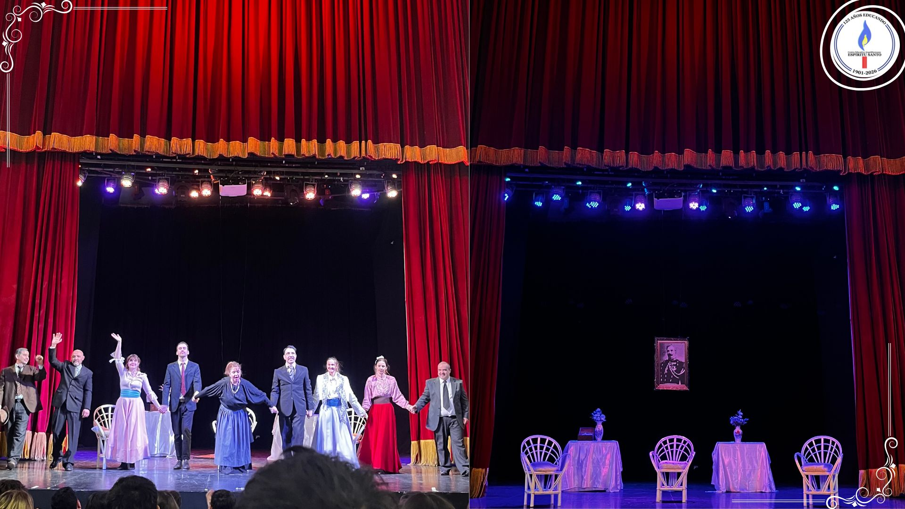

Obra de Teatro El Globo -Las de Barranco- 4º y 5º A y B y F2
Por: Tiziano Soto y Maia López Arrozpide

El pasado miércoles 24 de Junio los chicos/as de 4to, 5to de Economía y 4to, 5to de Informatica fuimos
al teatro El Globo a ver la obra de comedia clásica "Las de Barranco".
Los docentes Fernando Fariña y Griselda Orellano nos acompañaron en colectivo hasta el lugar. En la obra se nos presento una trama de una familia de una madre viuda llamada Maria y
sus tres hijas nombradas: Carmen, Manuela y Pepa,

Leer otras notas
Donacion de Sangre con el Hospital Italiano
Bingo Patrio (CEAES organizó un Bingo Familiar)
Publicidad